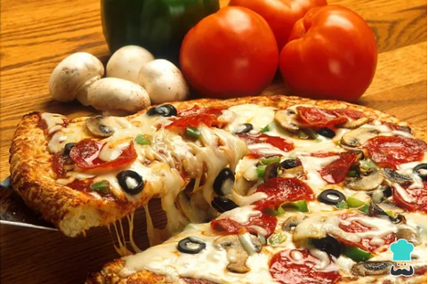

Receta de pizza casera
La pizza casera es uno de los platos más populares y queridos en todo el mundo. De origen italiano, se caracteriza por su masa artesanal, su salsa de tomate y el queso derretido que le da un sabor único e irresistible. Prepararla en casa permite personalizar los ingredientes y disfrutar una comida simple, rica y perfecta para compartir.

Ingredientes:
- 1 kilogramo de harina de fuerza (también conocida como harina 00)
- 1 cucharadita de sal fina
- 2½ tazas de agua tibia
- 2 cucharadas soperas de aceite de oliva
- 30 gramos de levadura fresca
Utensilios:
- Rodillo de madera
- Papel de horno
- Bol
Preparación:
Ahora sí, ¡empezamos la receta de pizza casera! Para ello, lo primero que vamos a hacer es mezclar en un recipiente el agua templada con la levadura fresca. Para elaborar una masa para pizza casera fácilmente puedes utilizar este tipo de levadura o hacer una masa de pizza con levadura seca, ambas son válidas. En el caso de que prefieras la seca, deberás mezclarla con la harina y si, por el contrario, prefieres la fresca, es fundamental mezclarla con agua tibia. La levadura fresca es aquella que se vende en bloque y se tiene que conservar en el frigorífico. En general, unos 30 gramos de levadura fresca equivalen a unos 10 gramos de levadura seca, tenlo en cuenta por si quieres usar una levadura diferente a la de esta receta de pizza italiana.
-
Cuando hayas mezclado la levadura con el agua, agrega las dos cucharadas de aceite. Mezcla bien para que se integren todos los ingredientes para la pizza.
-
Antes de que la preparación se enfríe, añade en un bol amplio la harina de fuerza y la sal, acomódalas en forma de volcán. Vierte la mezcla anterior en el centro.
-
Ahora es cuando tienes que empezar a amasar bien hasta que notes que la masa de pizza casera deja de pegarse en tus manos y puedes manejarla sin problemas.
-
Pasado el tiempo correspondiente, espolvorea un poco de harina sobre una mesa para preparar la pizza casera, coge una de las bolas y colócala sobre ella. Ahora deberás extenderla con tus manos estirando desde el centro hacia los costados, dándole forma circular. Si dispones de rodillo también puedes utilizarlo para que quede más fina la masa. Una vez estirada, ya puedes añadir la salsa para pizza casera y los ingredientes para pizza que prefieras. Puedes usar esta deliciosa receta casera de salsa de tomate y cebolla para pizza.
-
Pasado el tiempo correspondiente, espolvorea un poco de harina sobre una mesa para preparar la pizza casera, coge una de las bolas y colócala sobre ella. Ahora deberás extenderla con tus manos estirando desde el centro hacia los costados, dándole forma circular. Si dispones de rodillo también puedes utilizarlo para que quede más fina la masa. Una vez estirada, ya puedes añadir la salsa para pizza casera y los ingredientes para pizza que prefieras. Puedes usar esta deliciosa receta casera de salsa de tomate y cebolla para pizza.
Pasado el tiempo, introduce la preparación pizza casera y hornéala durante 10 minutos aproximadamente. Deberás vigilarla porque el tiempo final variará en función del tipo de horno y la intensidad que tenga. ¡Listo, tu pizza casera al horno estará para chuparse los dedos!